SentinelSCADA › Tutorial › Chapter 4
SentinelSCADA includes a comprehensive MODBUS/TCP driver for the most common connection to many PLCs and similar hardware I/O devices, and a MODBUS Simulator with a pre-selection of automated and user set values for immediate testing of your screen widgets. It also includes an IEC 61131-3 Ed.2 Structured Text logic engine in the form of the included AstroPLC, with which you can perform any logic, calculation or other PLC type functionality. And finally, for hardware abstraction of server PC values such as Date, Time, Calendar, CPU Load and other such values, there is the WorldSystem driver.
What combination of drivers you choose is entirely up to your project needs. If you want to display the server's Date or Day of Week, or drive a Clock widget from the real time, then WorldSystem is for you. (A Clock widget used as a timer needs only a numeric tag, from any driver.)
This chapter details the process of setting that up, and points out the importance of using the correct Tag data types in different scenarios.
We return to our BoilerHouse project as a reference.
From the System menu choose Device/Tag Setup…, then in the dialog that follows press + Add Device.
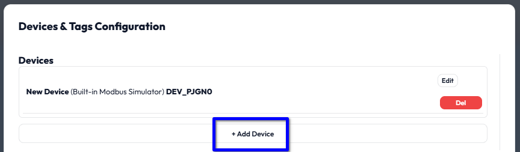
In the DRIVER TYPE drop down select WorldSystem.
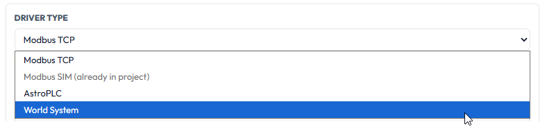
Once an internal driver such as WorldSystem has been added it cannot be added again. External drivers, such as MODBUS TCP, can be added as many times as your licence permits.
The dialog adapts to the driver type. Give the new driver a useful Name, and be sure to leave ADD EXAMPLE STARTER TAGS ticked. This is important.
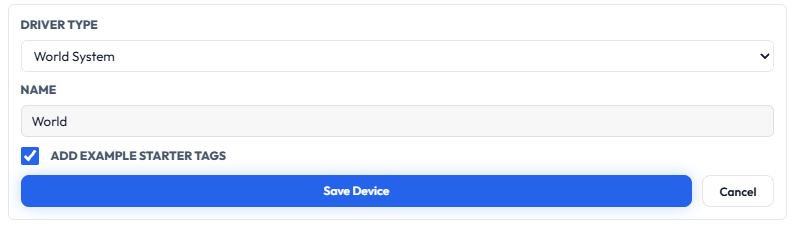
Press Save Device. A message confirms that the starter tags have been added.
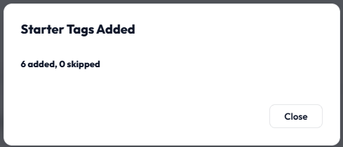
If you scroll down in the lower Tags section you will see the new tags appended.
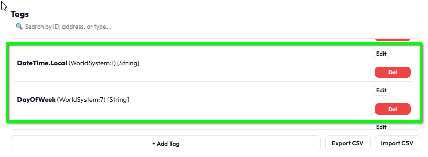
DateTime.Local and DayOfWeek are [String] tags: text, ready formatted for display. They are ideal for a Data Label widget, but a Clock widget cannot use them. A Clock needs a plain number, and for that we have the UnixEpoch tag, which we meet shortly. Choosing the right tag data type for the job is a theme you will meet again and again in SentinelSCADA.For a full list of the WorldSystem tags, see the World System Driver topic in the built-in help.
Press Close & Reload SCADA Engine to restart the driver system and make all tags available. There is a confirmation pop-up.
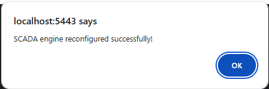
From the Toolbox, expand the Display & Data section, then select the Clock and drag it onto the screen. (It is dropped on top of the gauge here, but we will move it afterwards.)
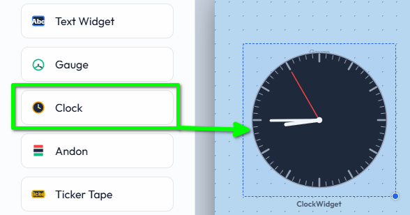
The Clock widget has various settings and functionality beyond a simple clock face.
You will notice that, without any configuration, it should already be displaying your local time. This is the first fall back: in the absence of any other setting, just use the local time, which might be all you need. The same fall back applies to the Time Zone setting, as we shall see.
Move the clock to the top right of the screen and select it. Let's look at its properties, which will also show us generally how widget properties are arranged.
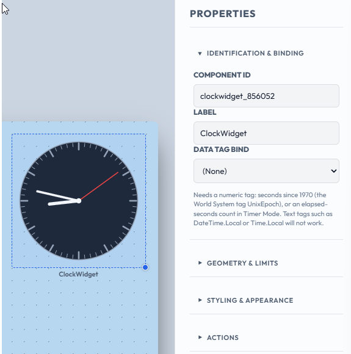
The clock needs a numeric value for its data source, whether you use it as a traditional clock or as a timer display. The value must be a number representing seconds.
When using it as a regular clock, that value should be the UnixEpoch: the number of seconds since 00:00:00 UTC on Thursday, 1 January 1970. The relevance is that, no matter what time zone you may be representing, that value is the same, on this day, at this moment, everywhere. That in turn makes it easy for us to apply a time zone.
For example, say you want a screen that looks like the traditional three clocks showing the time in New York, London and Tokyo. Add three clocks, bind them all to UnixEpoch, set the three different time zones, and you are done.
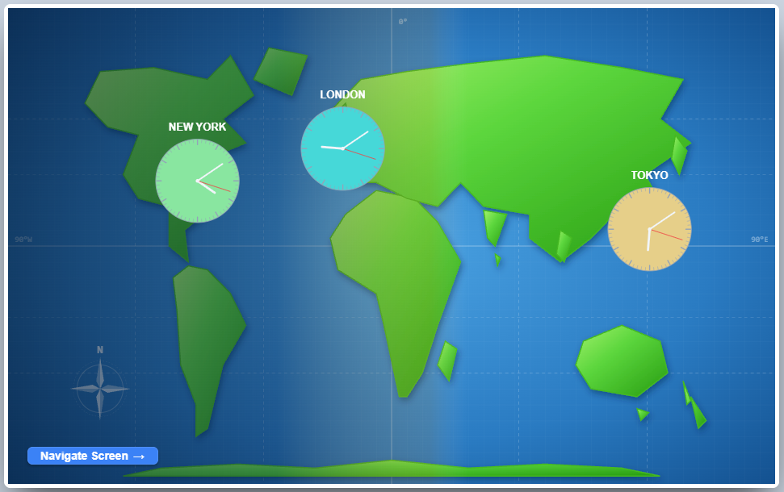
Firstly then, select UnixEpoch from our WorldSystem driver as the bound tag.
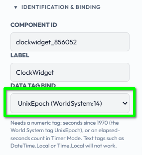
Next, assuming we want to set a specific time zone, expand the Geometry & Limits section and find the TIME ZONE (IANA) textbox. Here we put a specific location, using a place name rather than abbreviations such as EST or BST. For example America/New_York, Europe/London and Asia/Tokyo. A valid example looks like this:
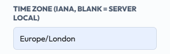
If the textbox is left blank, the clock uses the local time of the browser it is displayed in: the fall back again.
If, by chance, you enter an invalid location, for example Arizona/Tombstone, you are cautioned with an exclamation mark on the clock itself.
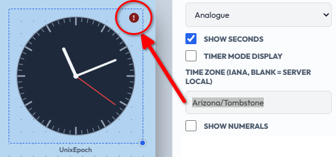
The clock widget has two display modes: clock face Analogue, and LED style Digital. Simply select the DISPLAY MODE you need.
When the clock's data tag is a PLC integer, the clock can act as a count down or count up timer display. For this, any numeric tag that counts seconds will do: for example, a UserWord register from the Modbus Simulator, as used here, or a register your PLC logic increments once a second.
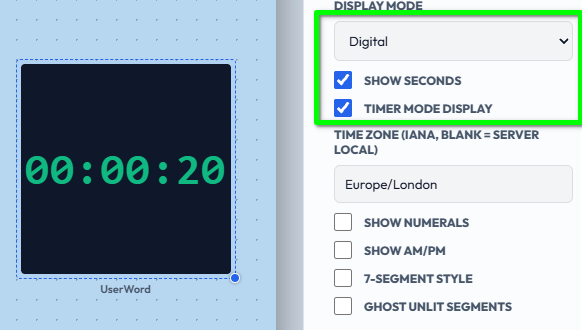
Normally we need to tick Show Seconds and Timer Mode Display as a minimum for this effect.
UTC. With Timer Mode Display set, the TIME ZONE setting is simply ignored and the value is shown as a plain count of seconds.The Show Numerals and Show AM/PM options are for analogue clocks. 7-Segment Style and Ghost Unlit Segments are for digital displays.
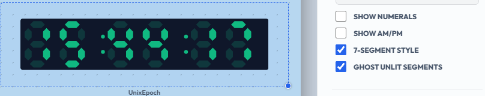
As with most widgets, the Styling & Appearance section offers a multitude of customisation settings for titles, locations, fonts, sizes and colours.
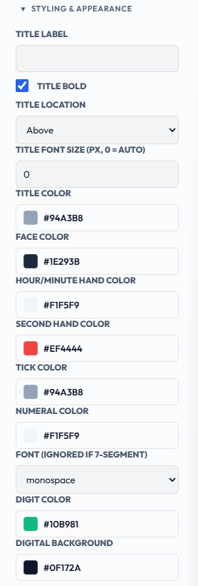
For the most part the system will try to help us not to accidentally leave a screen with unsaved changes, but good practice helps too.
DateTime.Local suit a Data Label, while a Clock needs a numeric tag, UnixEpoch for a real clock.Europe/London. Leave it blank for local time.In this chapter we discovered the Clock widget and its display modes, attaching it to a valid tag, and setting a specific time zone using the IANA method. In the next chapter we will be discovering Project Properties, UI themes and setting Screen defaults.